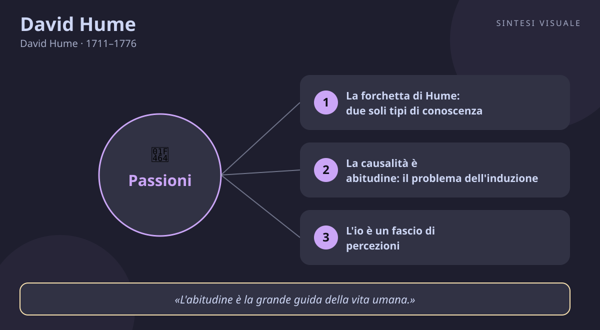

David Hume
David Hume · 1711–1776
«La ragione è schiava delle passioni»
- Abitudine
- Scetticismo
- Simpatia
- Esperienza
💬La massima
«La ragione è, e deve soltanto essere, schiava delle passioni, e non può mai pretendere ad altra funzione che quella di servirle e di obbedir loro.»
— David Hume, Trattato sulla natura umana, libro II, parte III, sezione 3. I primi due libri uscirono nel 1739, il terzo nel 1740. In originale inglese: «Reason is, and ought only to be the slave of the passions, and can never pretend to any other office than to serve and obey them.»
Spiegazione. Pensa a una nave: la ragione è il navigatore con le mappe, le passioni sono il vento nelle vele. Il navigatore è preziosissimo — calcola la rotta, evita gli scogli, misura le distanze — ma senza vento la nave non si muove di un palmo. Così, dice Hume, funziona la mente umana. La ragione fa due cose molto bene: confronta idee (come in matematica) e ricostruisce fatti (come nelle previsioni scientifiche). Quello che non può fare è decidere dove andare: gli scopi — ciò che desideriamo, temiamo, amiamo — nascono dalle passioni, cioè da fame, ambizione, affetto, curiosità, paura. Nessun ragionamento, da solo, ti farà alzare dal divano: serve un desiderio che spinga. E quel «deve» non è una condanna, è il riconoscimento del ruolo dovuto a ciascuno: alla ragione il servizio dell'intelligenza, alle passioni il comando del fine.
Il punto sottile. Attenzione: Hume non predica l'impulsività né disprezza la ragione — era uno degli uomini più razionali del suo secolo. Dice una cosa più precisa: la ragione può opporsi a una passione solo in due modi indiretti, mostrandole che l'oggetto desiderato non esiste oppure che i mezzi scelti non portano al fine. Tutto il resto — soppesare, pianificare, prevedere — è servizio, non comando. Aggiunge poi una distinzione preziosa: esistono passioni violente (ira, euforia, panico), che travolgono, e passioni calme (benevolenza, senso estetico, amore per la verità), così tranquille che spesso le scambiamo per ragione. La «forza d'animo» non è la ragione che vince, ma una passione calma che ne doma una violenta: quando resti gentile con chi ti ha insultato, non è il calcolo a vincere, è un affetto più profondo.
Perché conta oggi. Viviamo nell'illusione opposta: crediamo di decidere coi fogli di calcolo — dieta, risparmi, acquisti confrontati per ore — e poi ci accorgiamo che a decidere è stata la voglia, la paura di restare esclusi, il desiderio di piacere. Le aziende lo sanno benissimo e parlano alle passioni, non ai nostri prospetti. Hume ci restituisce onestà: smetti di biasimarti perché «sapevi cosa era giusto e non l'hai fatto» — la ragione aveva fatto il suo lavoro informandoti, ma il vento soffiava altrove. La mossa saggia non è imbavagliare le passioni: è coltivare quelle calme e usare la ragione come ottimo servitore — pianificare il percorso mentre il desiderio fornisce la spinta.
👤Biografia
David Hume nacque il 7 maggio 1711 a Edimburgo, in una famiglia della piccola nobiltà terriera scozzese; il padre morì quando lui aveva due anni e fu la madre a crescerlo con i fratelli. Bambino prodigio, entrò all'università di Edimburgo intorno ai dodici anni e già allora, racconterà nella sua breve autobiografia La mia vita, era divorato dalla passione per la letteratura. Tentò la strada del diritto per compiacere la famiglia, ma «trovai un'avversione insormontabile per tutto fuorché per la filosofia»: mollò tutto per i libri.
Gli anni francesi e il capolavoro ignorato. Dopo un fallimento come impiegato di un mercante a Bristol, nel 1734 si ritirò a La Flèche, in Francia — lo stesso collegio dove aveva studiato Cartesio — e lì, in tre anni di studio solitario, scrisse il Trattato sulla natura umana. Aveva meno di trent'anni e credeva di aver rifondato la filosofia come «scienza dell'uomo». Il libro uscì nel 1739-1740 e fu un disastro: «cadde morto dalla stampa», scrisse lui stesso, «senza destare nemmeno un mormorio tra i fanatici». Il colpo lo segnò, ma non lo fermò: riscrisse le stesse idee in forma più leggibile e i Saggi morali e politici (dal 1741) cominciarono a farsi leggere.
Una carriera tra rifiuti e successi. Fece il precettore di un nobile squilibrato, il segretario di un generale in due spedizioni militari (guadagnando l'indipendenza economica), e per due volte gli fu negata una cattedra universitaria — a Edimburgo nel 1744-45 e poi a Glasgow — per l'opposizione del clero, che lo riteneva scettico e irreligioso. Ripiegò sul posto di bibliotecario della Facoltà di Avvocati di Edimburgo (1752-1757) e lì, tra gli scaffali, scrisse la Storia d'Inghilterra in sei volumi (1754-1762): un bestseller che lo rese ricco e indipendente. A Parigi, come segretario d'ambasciata (1763-1765), fu accolto come una star dei salotti illuministi — «le bon David», il buon David — prima del celebre litigio con Rousseau, che aveva accolto a Londra e che lo accusò di complotti inesistenti. Chiuse la carriera come sottosegretario di Stato (1767-1768) e si ritirò a Edimburgo.
Il carattere e la morte serena. Corpulento, gioviale, amante della conversazione, delle carte e della buona tavola: l'opposto del filosofo tetro. Adam Smith, suo grande amico, disse che si accostava «all'idea di uomo perfettamente saggio e virtuoso quanto la fragilità umana permette». Malato terminale nel 1776, affrontò la morte con allegria filosofica, scherzando con Boswell — che lo visitò sperando di vederlo tremare — sulla improbabilità dell'aldilà. Morì il 25 agosto 1776, lasciando i Dialoghi sulla religione naturale da pubblicare dopo la morte (uscirono nel 1779) per non scandalizzare gli amici in vita.
📌Sintesi del pensiero
Ogni idea è la copia di un'impressione sensibile: se una parola — sostanza, io, connessione necessaria, causa prima — non rimanda a nessuna impressione, è un suono vuoto. Con questo rasoio Hume smonta metafisica e teologia razionale, e riduce il sapere del mondo a esperienza più abitudine: crediamo che il futuro assomiglierà al passato non per dimostrazione, ma perché la consuetudine ci ha addestrati. A guidare la vita non è la ragione, ma le passioni — la ragione calcola i mezzi, il desiderio detta i fini — e la stessa morale nasce dal sentimento, dalla simpatia per il piacere e il dolore altrui. Scetticismo mitigato, il suo: dubitare sui libri, vivere da uomini comuni nella vita ordinaria.
- Conoscenza: la «forchetta» (relazioni tra idee contro questioni di fatto), l'induzione senza fondamento razionale, la causalità come abitudine, l'io come fascio di percezioni.
- Passioni e morale: la ragione schiava delle passioni, calme contro violente, simpatia come radice dell'approvazione morale, giustizia come virtù artificiale, il divieto di derivare il «dovere» dall'«è».
- Religione e società: i miracoli soppesati con l'evidenza, la critica dell'argomento del disegno, la religione nata da paura e speranza, la storia e i saggi politici sul commercio e la libertà.
🏛️I temi fondamentali
- La forchetta di Hume: due soli tipi di conoscenza. Tutto ciò che possiamo sapere, dice Hume, cade in due cesti. Primo: le relazioni tra idee — matematica e logica — certe e dimostrabili, ma che non ci dicono nulla su ciò che esiste (un triangolo ha tre lati per definizione, che esistano triangoli è un'altra storia). Secondo: le questioni di fatto — tutto il resto — che conosciamo solo per esperienza e mai con certezza assoluta. Il test è semplice: di ogni idea chiediti «da quale impressione deriva?». Se non trovi risposta, stai maneggiando parole vuote — ed è così che Hume liquida mezza metafisica. Esempio concreto: sai con certezza che 7 + 5 = 12, ma che il tuo treno arrivi in orario non lo sai: lo credi per esperienza passata, ed è un sapere di tipo diverso, fallibile. Da qui la sua celebre provocazione finale alla Ricerca: i volumi di teologia e metafisica che non contengono né ragionamenti astratti né ragionamenti sperimentali «diamoli alle fiamme, perché non possono contenere che sofismi e illusioni».
- La causalità è abitudine: il problema dell'induzione. Vedi una palla da biliardo colpirne un'altra e la seconda muoversi: hai mai visto la causa, la forza necessaria che lega i due eventi? No — hai visto solo una congiunzione costante: prima l'una, poi l'altra, tante volte. Eppure sei prontissimo a scommettere che domani il pane nutrirà e il fuoco scalderà. Perché? Non per un ragionamento — dimostrare che il futuro assomiglierà al passato richiederebbe di presupporlo — ma per consuetudine: la ripetizione crea in noi l'aspettativa, come un solco. «L'abitudine è la grande guida della vita umana», e meno male: senza di essa non potremmo agire. Ma è una guida cieca, non una dimostrazione. Esempio concreto: ti fidi che premendo l'interruttore si accenda la luce — migliaia di conferme — finché un giorno resta tutto buio e scopri che l'abitudine non era una garanzia. Ogni volta che un algoritmo «prevede» i tuoi gusti perché hai cliccato cento volte allo stesso modo, sta scommettendo alla Hume: sul passato, non sul necessario.
- L'io è un fascio di percezioni. Cerca te stesso dentro di te, propone Hume: cosa trovi? Caldo o freddo, luce o ombra, amore o odio, dolore o piacere — sempre qualche percezione particolare, mai un «io» separato dalle percezioni, mai una sostanza che le possieda. La mente, scrive, «è una specie di teatro, in cui le percezioni appaiono, passano, ripassano, scivolano via». L'identità personale non è una cosa che scopriamo, ma una finzione utile cucita dalla memoria e dall'immaginazione. Esempio concreto: prova a descriverti senza elencare esperienze, ricordi, sensazioni o tratti osservati — non resta nulla da afferrare, come cercare il «bosco» oltre gli alberi. È un'idea che il buddhismo conosceva da secoli e che le neuroscienze oggi ritrovano: il sé come costruzione, non come padrone di casa.
- La ragione serve, le passioni comandano. È il cuore della nostra massima, e Hume la spinge fino alla provocazione: «non è contrario alla ragione preferire la distruzione del mondo intero al graffiarsi un dito» — perché la ragione giudica il vero e il falso, non il bene e il male dei fini. Vuoi smettere di fumare? La ragione ti mostra radiografie e statistiche, ma a muoverti sarà il desiderio — di salute, di vederti crescere i figli, di non puzzare. Se il desiderio manca, il ragionamento più perfetto resta lettera morta: ecco perché «sappiamo tutti cosa dovremmo fare» e non lo facciamo. La saggezza, allora, è doppia: usare la ragione per smascherare mezzi sbagliati e credenze false, e coltivare passioni calme — benevolenza, curiosità, amore del bello — che domano quelle violente senza bisogno di prediche.
- La morale nasce dal sentimento: la simpatia. Da dove viene il giudizio «questo è ingiusto»? Non da un teorema: davanti a un'azione crudele proviamo disapprovazione come davanti a un suono stonato proviamo fastidio — è un sentimento, non un calcolo. Il meccanismo che lo rende possibile è la simpatia: contagio naturale per cui il piacere e il dolore altrui risuonano in noi (il neonato che piange se piangono gli altri, il tifoso che esulta). Su questa base Hume distingue virtù naturali (benevolenza, generosità) e la grande virtù artificiale: la giustizia — regole di proprietà e di promessa inventate dagli uomini perché i beni sono scarsi, come due vicini che si accordano per prosciugare insieme un prato che da soli non bonificherebbero. E qui cade la famosa ghigliottina: dall'«è» non segue logicamente alcun «dovere» — chi predica la morale partendo dai fatti compie un salto che la ragione non autorizza.
📚Le opere principali
- Trattato sulla natura umana (1739-1740). Il libro-sistema in tre volumi: intelletto, passioni, morale — il tentativo di fondare una «scienza dell'uomo» sul modello di Newton. Tesi centrale: idee come copie di impressioni, causalità come abitudine, ragione serva delle passioni, morale come sentimento. Conta perché è la più radicale demolizione dell'epoca di sostanza, io e necessità — ignorato alla nascita («cadde morto dalla stampa»), divenne il testo che «svegliò Kant dal sonno dogmatico» e il manuale segreto di ogni empirismo successivo.
- Ricerca sull'intelletto umano (1748). La riscrittura divulgativa del primo libro del Trattato: forchetta, induzione, miracoli, libertà. Tesi centrale: tutto il sapere fattuale poggia sull'abitudine, e le credenze vanno proporzionate all'evidenza. Conta perché è l'Hume più letto e più citato — qui stanno la critica dei miracoli e la sfida all'induzione che ancora impegna i filosofi della scienza.
- Ricerca sui principi della morale (1751). Il libro che Hume amava di più: «di tutti i miei scritti, incomparabilmente il migliore». Tesi centrale: la morale si fonda sul sentimento di umanità e sulla simpatia, con la giustizia come convenzione utile. Conta perché fonda un'etica senza comandamenti né calcoli — antenata diretta dell'utilitarismo e di ogni etica dell'empatia — e perché mostra lo Hume costruttivo, non solo demolitore.
- Dialoghi sulla religione naturale (postumi, 1779). Tre personaggi — il dogmatico, lo scettico, il fideista — discutono se il mondo provi l'esistenza di Dio. Tesi centrale: l'argomento del disegno (il mondo come orologio che richiede un orologiaio) non regge, e la religione nasce da paura e speranza, non da ragione. Conta perché è il capolavoro dello scetticismo religioso moderno: Hume lo tenne nel cassetto per non scandalizzare, e uscì solo dopo la sua morte per cura del nipote.
💬Massime celebri
«Un uomo saggio proporziona la propria credenza all'evidenza.» — Ricerca sull'intelletto umano, sezione X, «Dei miracoli» (1748). In inglese: «A wise man, therefore, proportions his belief to the evidence.» Conta perché è la regola d'oro contro bufale e miracoli di ogni epoca: più straordinaria è la notizia, più solide devono essere le prove — il vaccino logico contro le catene di sant'Antonio dei social.
«L'abitudine è la grande guida della vita umana.» — Ricerca sull'intelletto umano, sezione V (1748). In inglese: «Custom, then, is the great guide of human life.» Conta perché riassume l'intera filosofia dell'induzione: viviamo di passato ripetuto, non di certezze dimostrate — e ricordarsene rende insieme più efficaci (coltiva buone abitudini) e più umili (il futuro può sorprenderti).
«La bellezza non è una qualità delle cose stesse: esiste soltanto nella mente che le contempla.» — Della norma del gusto (1757). In inglese: «Beauty is no quality in things themselves: it exists merely in the mind which contemplates them.» Conta perché fonda l'estetica moderna: il gusto è sentimento, non teorema — eppure, aggiunge Hume, l'esperienza e il confronto affinano il giudice, altrimenti ogni scarabocchio varrebbe la Cappella Sistina.
⌛Contesto storico
- Hume nacque nel 1711 in una Scozia appena unita all'Inghilterra con l'Atto di Unione del 1707: un piccolo paese povero, presbiteriano e orgoglioso, che proprio allora si trasformava nella fucina dell'Illuminismo scozzese. Edimburgo aveva poche decine di migliaia di abitanti ma università vivaci, club e circoli — la Select Society, il Poker Club — dove Adam Smith, il medico-filosofo Hutcheson prima di lui, lo storico Robertson e il giurista Lord Kames discutevano di tutto. Crebbe tra due rivolte giacobite (1715 e 1745): mentre i sostenitori degli Stuart tentavano di restaurare la dinastia cattolica, lui faceva il precettore e il segretario militare, già tutto dedito ai libri.
- La Gran Bretagna degli Hannover era la nuova potenza commerciale del mondo: Giorgio I e II sul trono, Walpole inventore del primo governo moderno, Banca d'Inghilterra, colonie, stampa libera ma Chiese stabilite potentissime — in Inghilterra anglicana, in Scozia presbiteriana. Fu proprio il clero a sbarrargli le cattedre: uno scettico sulla religione non poteva insegnare ai giovani. Hume visse così da letterato indipendente, bibliotecario e poi storico di successo, in una società mercantile che premiava l'utile e temeva gli atei.
- La Francia fu la sua seconda patria intellettuale: a La Flèche — il collegio di Cartesio — scrisse il Trattato; a Parigi da diplomatico (1763-1765) frequentò i salotti e i philosophes, da d'Holbach a Diderot, mentre Voltaire tuonava contro l'infame e Rousseau preparava le sue confessioni. L'Europa colta era una repubblica delle lettere senza frontiere: si viaggiava per discutere, ci si scriveva in francese e inglese, e un litigio tra filosofi faceva il giro dei salotti.
- Da chi è stato influenzato John Locke, il padre dell'empirismo (idee dall'esperienza); George Berkeley, il vescovo che negava la materia (Hume ne prese lo scetticismo e lo estese); Francis Hutcheson e Shaftesbury, col senso morale innato e la benevolenza; Pierre Bayle, il grande scettico ugonotto; Isaac Newton, come modello di metodo — fare per l'uomo ciò che Newton aveva fatto per i cieli.
- A chi ha trasmesso ad Adam Smith, l'amico di una vita (simpatia contro puro interesse); a Immanuel Kant, «svegliato dal sonno dogmatico»; agli utilitaristi Bentham e Mill; al positivismo di Comte; ai positivisti logici, che dalla sua forchetta ricavarono il principio di verificazione; a Karl Popper, che sull'induzione costruì il falsificazionismo; fino al bayesianesimo, alle scienze cognitive e all'economia comportamentale di oggi.
🌊L'eredità
- Il primo a raccogliere il testimone fu Kant, e lo disse lui stesso: fu Hume a svegliarlo «dal sonno dogmatico» — senza la sfida dell'induzione non ci sarebbe stata la Critica della ragion pura, che prova a salvare la scienza proprio dove Hume l'aveva ferita. L'amico Smith trasformò la simpatia humeana nel cemento della società e del mercato: la Teoria dei sentimenti morali è una lunga conversazione col filosofo di Edimburgo. Poi vennero Bentham e i Mill, che fecero della morale del sentimento il calcolo dell'utilità; Comte, che del rifiuto humeano della metafisica fece il positivismo; Darwin, che lesse Hume e vi trovò il naturalismo pronto all'uso.
- Il Novecento lo rilesse due volte: i positivisti logici del Circolo di Vienna riesumarono la forchetta come principio di verificazione («o è logica o è verificabile, il resto è senza senso»); Popper accettò la diagnosi — l'induzione non si giustifica — e la rovesciò in metodo, il falsificazionismo. Wittgenstein, Ayer, Strawson discussero tutti con lui; il dibattito sul «Nuovo Hume» chiede ancora se fosse scettico fino in fondo o realista mascherato. E oggi Hume vive nei laboratori: l'associazionismo è l'antenato delle reti neurali, la simpatia abita le neuroscienze dell'empatia, il calcolo di credenze ed evidenza si chiama bayesianesimo, e ogni volta che l'economia comportamentale mostra che «decide la pancia e la ragione firma», sta riscoprendo — con gli esperimenti — che la ragione è schiava delle passioni.
🌍Esempi di oggi
- La dieta che la ragione approva e la voglia boccia. Sai tutto: calorie, piano alimentare, esami perfetti che peggiorerebbero. Poi il vassoio dei cornetti in ufficio emana il suo richiamo e il tuo «da lunedì» si scioglie. Hume non ti biasimerebbe: la ragione aveva fatto il suo dovere informandoti, ma il vento soffiava altrove. La sua ricetta è pratica: non predicarti addosso, cambia gioco — coltiva una passione calma più forte (stare bene per giocare con i figli, la sfida sportiva con un amico) e usa la ragione da brava serva, per esempio non tenendo dolci in casa invece di contarci sulla forza di volontà davanti al frigorifero.
- La riunione dove i dati non bastano. Porti slide impeccabili: i numeri dicono di cambiare fornitore. Nessuno si muove: alzate di spalle, «abbiamo sempre fatto così». Poi il capo racconta del cliente perso per un ritardo — paura, orgoglio, urgenza — e in dieci minuti la decisione è presa. È Hume in sala riunioni: le statistiche erano il navigatore, ma la nave è partita solo quando si è alzato il vento delle passioni. Chi guida team lo sa d'istinto: prima accendi il desiderio (o il timore), poi servi i numeri come rotta.
- «Il sole sorgerà anche domani» e il feed che ti conosce. Ti affidi ogni giorno a scommesse humeane: l'autobus passerà, il telefono si accenderà, Netflix «sa» cosa ti piace perché hai cliccato cento volte commedie. Non hai dimostrazioni, hai consuetudini — e quasi sempre funzionano, perché l'abitudine è un'ottima guida. Finché un giorno l'autobus cambia percorso senza avviso o l'algoritmo ti propone l'horror sbagliato: la sorpresa ti ricorda che vivevi di passato proiettato in avanti. La lezione è duplice e pratica: fidati delle regolarità (non potresti vivere altrimenti), ma proporziona la credenza all'evidenza — e tieni sempre un piano B.
📄David Hume (1711–1776), lo scettico sorridente di Edimburgo che mise le passioni sul trono e la ragione al loro servizio
Ritratto (Allan Ramsay, ritratto di David Hume del 1766 circa — pubblico dominio, Wikimedia Commons):
🧠Quiz
Rispondi in chat con la lettera di ogni risposta, es. 1B 2A 3C 4D 5D. Oppure copia e rispondi così: «Quiz Hume: 1B 2A 3C 4D 5D» (usa - per le risposte che salti).
1 Cosa significa che la ragione è «schiava delle passioni»?
2 Cosa distingue la «forchetta di Hume»?
3 Perché la causalità è, per Hume, questione di abitudine?
4 Che cos'è l'io per Hume?
5 Quale episodio segna davvero la vita di Hume?
✅Soluzioni — tocca per vedere
1B – 2C – 3B – 4C – 5D
🔁Ripasso
- Ragione e passioni: se sbagli la 1, ricorda la nave: il navigatore (ragione) indica mezzi e scogli, il vento (passioni) decide se e dove si va — la forza d'animo è una passione calma che ne doma una violenta, mai la ragione da sola.
- Forchetta e induzione: se sbagli la 2 o la 3, fissa il test delle due domande: «è dimostrabile a priori?» (relazioni tra idee) contro «lo so solo per esperienza?» (questioni di fatto); e ricorda che tra causa ed effetto vediamo solo successione costante, mai necessità — il resto lo aggiunge l'abitudine.
- Io e morale: se sbagli la 4 o la 5, pensa al teatro delle percezioni (l'io è il fascio, non il palcoscenico) e alla simpatia (la morale nasce dal sentire, la giustizia è una convenzione utile); per la vita, le date-chiave sono 1739-40 il Trattato ignorato, 1754-62 la Storia che lo rese celebre, 1776 la morte serena da scettico.
🖼️In un colpo d’occhio

Tocca l’immagine per ingrandirla.